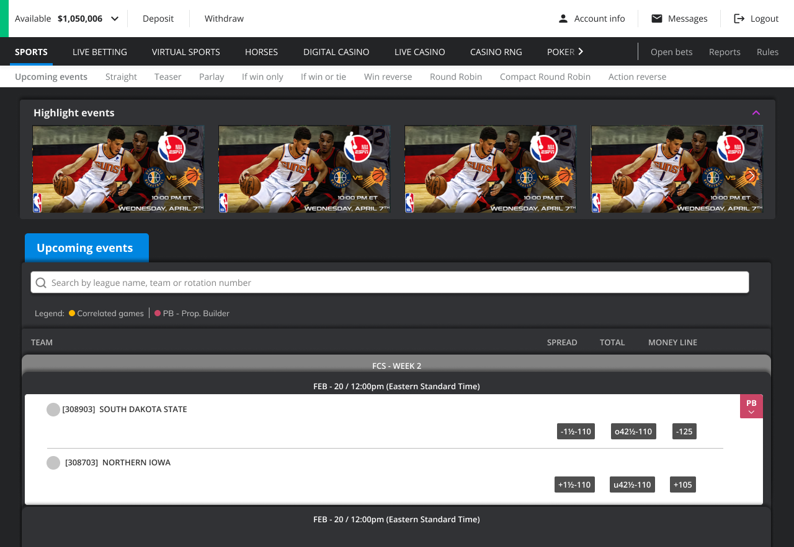
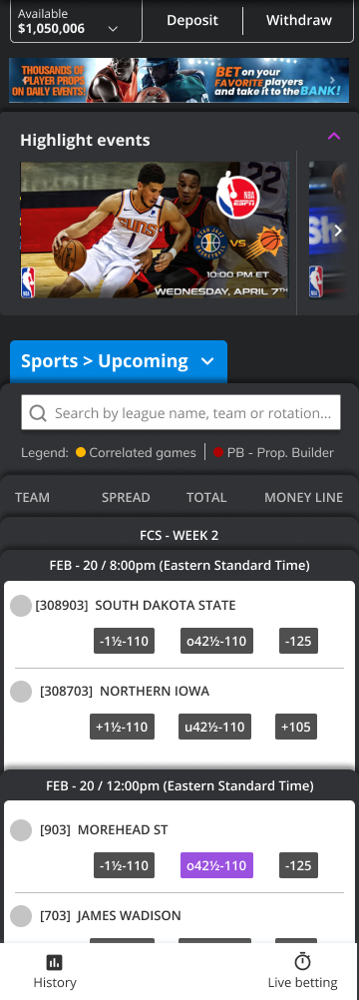
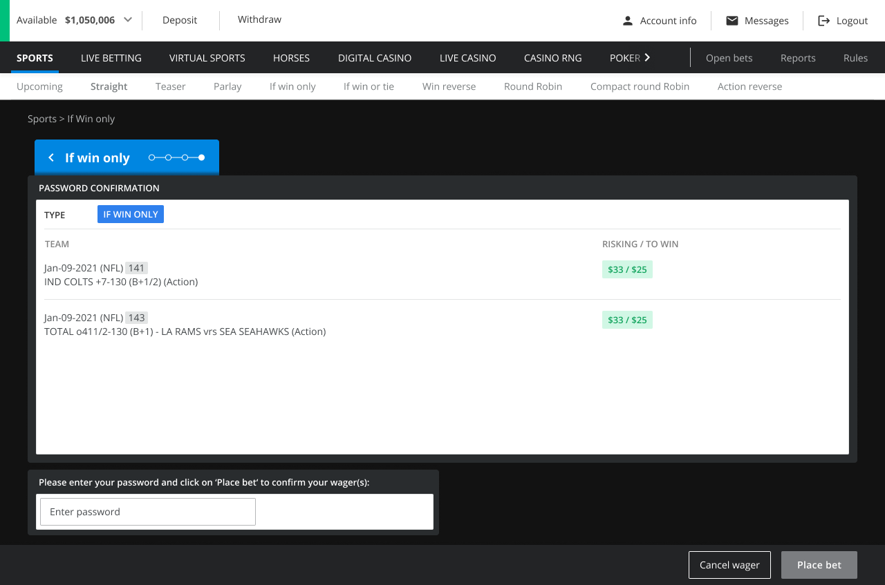
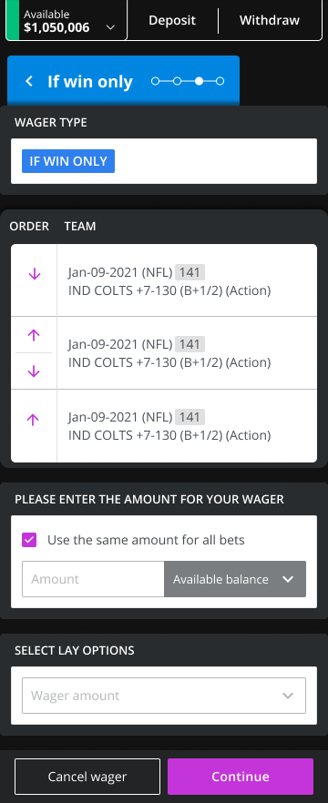
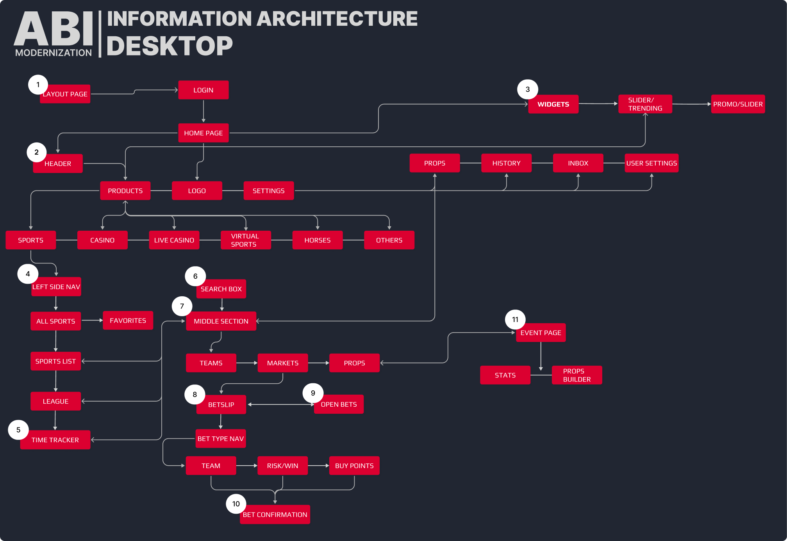
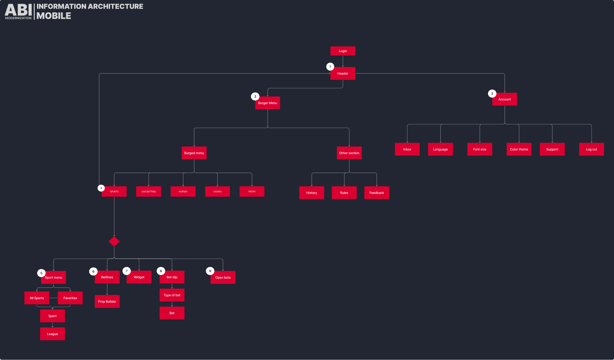
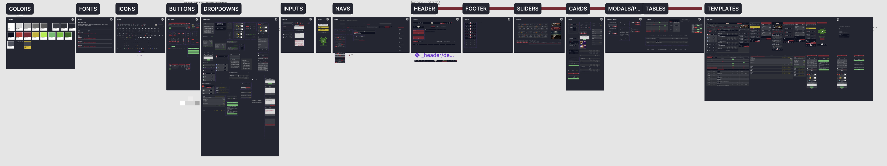
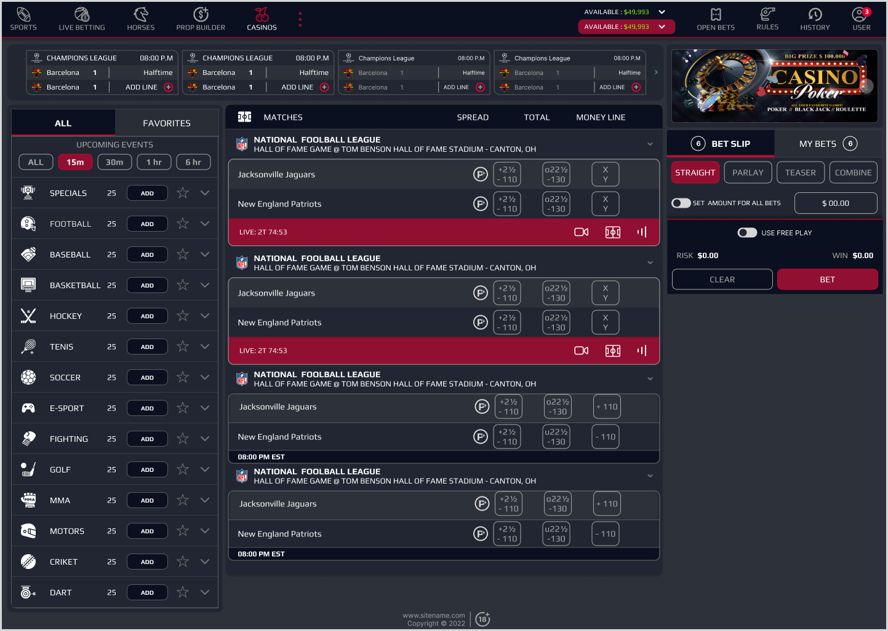
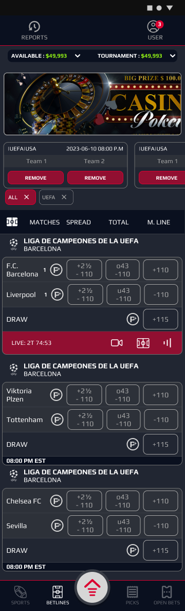
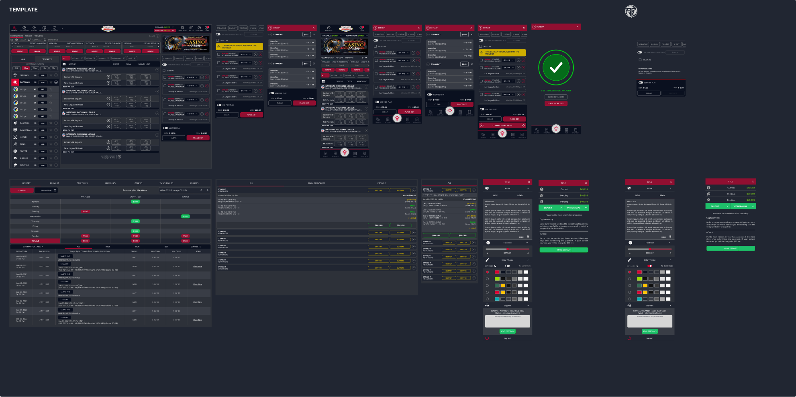

Case study 01 Lead UX/UI Designer · Sports-betting platform
PLAYER SITE MODERNIZATION
The player-facing site had absorbed years of ad-hoc change: dated visuals, an inconsistent component library, and navigation that no longer matched how the product had grown. I led the ground-up redesign, from the information architecture down to a rebuilt component library.
Client work · deeper walkthrough on requestAt a glance
The problem
Years of ad-hoc changes had left the player site behind on usability: dated visual design, an inconsistent component library, and navigation that no longer matched how the product had grown.
The solution
A full redesign of the player site, desktop and mobile: a re-mapped information architecture and a component library rebuilt from the ground up.
My role
Lead UX/UI Designer. Design lead for the project: information architecture, design system, usability testing, design critique and stakeholder presentation.
The team
Led a core team of 3 designers (myself + 2), within a wider distributed design team of 8 across the organisation.
Context & challenge
The existing player site had accumulated years of ad-hoc changes and had fallen behind on usability. The visual design was dated, the component library had drifted out of consistency, and the navigation no longer reflected how much the product had grown around it.
The brief was not a reskin. This was a ground-up redesign of the entire player site: everything from the information architecture down to a rebuilt component library, across both desktop and mobile.




Dense tables, inconsistent form styling and a top navigation carrying more sections than it was designed for. The surface area had outgrown its structure.
Information architecture
I re-mapped the full site structure for both desktop and mobile: login, account and wager history, deposits and withdrawals, limits and budgeting tools, sportsbook navigation and bet types. These were flows that had grown organically and inconsistently over years; the work was to give them a structure that matched the product as it actually existed.


Design system
I built a new component library from the ground up, structured on atomic design principles: colours, typography, iconography, buttons, dropdowns, inputs, navigation, headers and footers, sliders, cards, modals, tables and page templates. The point was to give the team something to design and ship consistently from, instead of producing one-off screens that drifted further apart with every release.

Testing & collaboration
I directed the two other designers working on the project directly, running usability testing and regular design critique sessions to hold quality and consistency across a large surface area. On a redesign this wide, critique is the mechanism that stops a system fragmenting again while it's being built.
Throughout, I presented designs and the reasoning behind them to management, folding their feedback back into the system and the templates as the project progressed.
Outcome
The redesigned player site launched successfully and is the platform's current live design. The response from leadership was strongly positive, and the new design system and template library are now the foundation the team designs from going forward, replacing the fragmented, inconsistent patterns of the old site.


